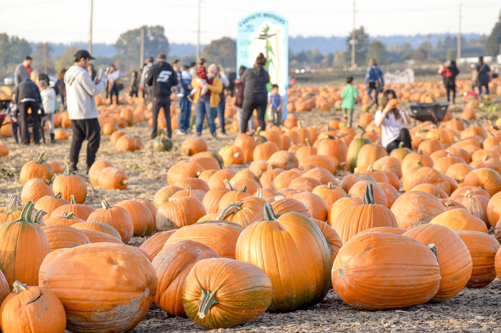
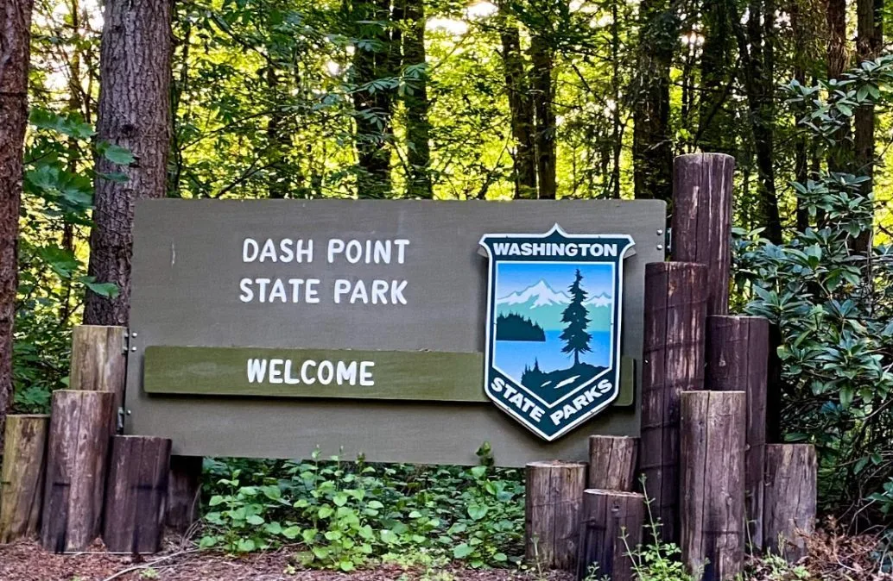
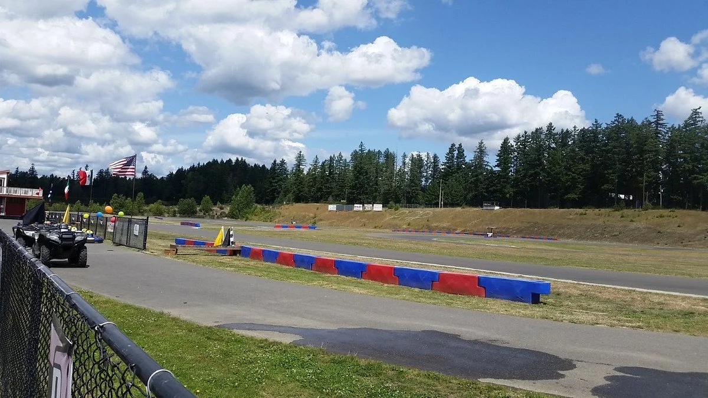

Demographics - 2022 US Census Data
Population: 134,392
Veterans, 2017-2021: 5,745
Foreign born persons, 2017-2021: 32.2%
Race:
White, Alone: 43.3%
Black or African-American, Alone: 12.2%
American Indian and Alaska Native, Alone: 0.5%
Asian, Alone: 22.1%
Native Hawaiian and Other Pacific Islander, Alone: 9.8%
Hispanic or Latino: 16.2%
Families and Living Arrangments:
Households 2017-2021: 45,957
Persons per household, 2017-2021: 2.89
Language other than English spoken at home, percent of persons age 5 years+, 2017-2021: 42.5%
Schools
Elementary Schools:
Carriage Crest Elementary
Cedar Valley
Covington Elementary
Crestwood Elementary
East Hill Elementary
Emerald Park Elementary
Fairwood Elementary
George T. Daniel Elementary
Glenridge Elementary
Grass Lake Elementary
Horizon Elementary
Jenkins Creek Elementary
Kent Elementary (Grades 1-5)
Lake Youngs Elementary
Martin Sortun Elementary
Meadow Ridge Elementary
Neely-O/Brien Elementary
Panther Lake Elementary
Park Orchard Elementary
Pine Tree Elementary
Ridgewood Elementary
River Ridge Elementary
Sawyer Woods Elementary
Scenic Hill Elementary
Soos Creek Elementary
Springbrook Elementary
Sunrise Elementary
Middle Schools:
Canyon Ridge Middle School
Cedar Heights Middle School
Mattson Middle School
Meeker Middle School
Meridian Middle School
Mill Creek Middle School
Northwood Middle School
High Schools:
Kent-Meridian High School
Kentlake High School
Kentridge High School
Kentwood High School
Academy and Programs:
Kent Laboratory Academy - Grades 3-12
Kent Virtual Academy - Grades 6-12
iGrad - Dropout Re-Engagment for Ages 16-21

Explore Kent Station, a downtown, outdoor mall
Enjoy fresh, locally grown vegetables from Carpinito Brother's Farm
Dash Point State Park offers great hiking and camping, perfect to experience the beauty of the Pacific Northwest

Enjoy serene Lake Meridian, with great waters and parks

See one of many events held at the ShoWare Center, home of the Seattle Thunderbirds
Get some high octane action at Pacific Raceways